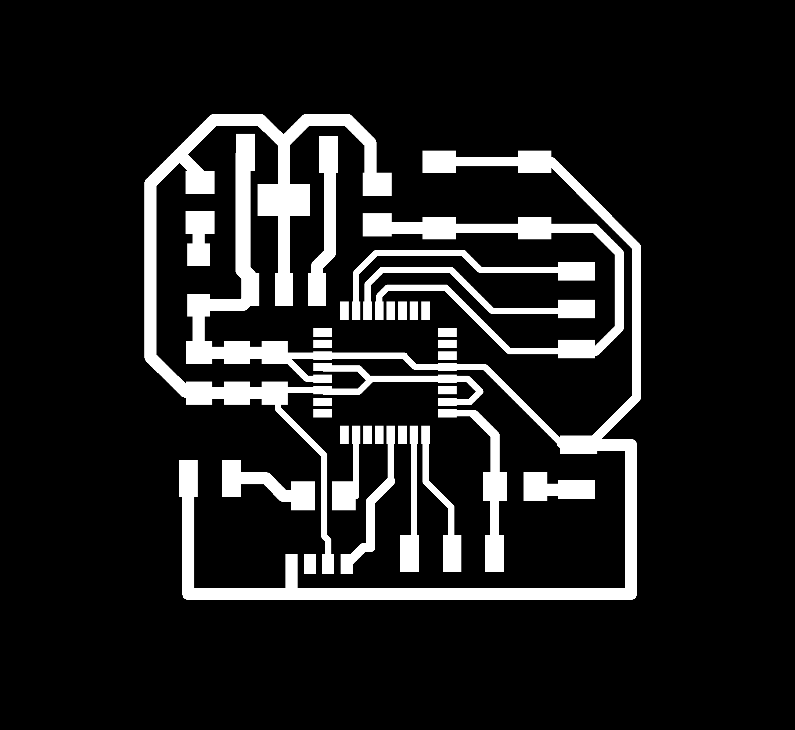

I've always been fashinated by the fact that you can simulate complex behaves using simple modules that work like a flock. I remember an experiment done with "shy" robots vs. "friendly" robots. The first ones were moving away, as soon as they detected another machine, while the others were going in the directions of the closer robot to "stay together". To do somethign like this it would be too complex and expensive, but still i want to make boards that influence each others.
The board has a IR led, a red led and a IR receiver. When turned on, they pick a random value in a range and they blink with that frequence. The IR led is transmitting the value of delay between the blinks. If another board is detecting that value, it compares it with it's own, increasing or decreasing it by a fixed amount (let's say 10 milliseconds), to move closer to the value it read. My hope is that all the boards, will get to the same value and blink together.
Design the board took me almost one day of work (considering the optimization, choosing the components and prepare the file for the laser). It's still a lot but at least i had no problem this time. Here the board: 
At the beginning I planned to use a ATMEGA 48, but I soon realized that the memori was definitely too little.
I did the first tests following this tutorial.
Here the specifications to add to Boards.txt in the arduino IDE
################################################################# atmega48.name=ATmega48 (8 MHz internal clock) atmega48.upload.protocol=stk500 atmega48.upload.tool=avrdude atmega48.upload.maximum_size=4094 atmega48.upload.speed=38400 atmega48.bootloader.tool=avrdude atmega48.bootloader.low_fuses=0xE2 atmega48.bootloader.high_fuses=0xDF atmega48.bootloader.extended_fuses=0x01 atmega48.bootloader.path=arduino:atmega8 atmega48.bootloader.file=ATmegaBOOT.hex atmega48.bootloader.unlock_bits=0x3F atmega48.bootloader.lock_bits=0x0F atmega48.build.mcu=atmega48 atmega48.build.f_cpu=8000000L atmega48.build.core=arduino:arduino atmega48.build.variant=arduino:standard ################################################################
After the first test I switched back to the ATMEGA 328p. I made four boards (1 ATMEGA 48 and 3 ATMEGA 328p).
To test the boards i upload the blink to both the red led and the IR led (visible witht the camera of the cellphone)
To Test the boards and the possible problems I divided the sketch in two parts. The first half is to make the led blinking to a certain speed (random and different everytime you reset it), compare its speed to another (in the test a fixed value), and step by step adjust the original random speed to the value.
Here the sketch
const int ledPin = 13;
int ledState = LOW;
long previousMillis = 0;
unsigned long currentMillis = 0;
long interval = 1000;
unsigned long ran = 0;
unsigned long ran1 = 5000;
void setup() {
Serial.begin (9600);
pinMode(ledPin, OUTPUT);
randomSeed(analogRead(1));
}
void loop()
{
ran = random(50, 150);
ran=ran*10;
ran1 = 50;
while (1)
{
currentMillis = millis();
Serial.println(ran);
interval = ran;
if (currentMillis - previousMillis > interval) {
previousMillis = currentMillis;
if (ran > ran1)
{
ran = ran - 10;
}
else
{
ran = ran + 10;
}
if (ledState == LOW)
ledState = HIGH;
else
ledState = LOW;
digitalWrite(ledPin, ledState);
delay (10);
}
}
}
The sketch was working pretty well, but i had some trouble with the boards. It seems that the flux we are using can cause some troubles: the behave of the boards, but one, is not reliable.
The two boards are communicating via IR, using the same hardware (an IR LED as an emitter and a receiver at 36kHz)
At the beginning the idea was to use a ATmega 48 but I didn't consider that the test needs codes larger than the final one, and I had to switch to a ATmega 328.
During the first test of communication one board had a code that turn on bothe the led at the same time, while the other was reading the values and send it via serial to my serial monitor.
What I noticed is that the receiver was reading the IR at the beginning, but in less that a second, it went back to the previous value. Thinking it was a problem of power I changed the resistor of the IR emiiter, from 499 Ohm, to 0 Ohm.
This wasn't the problem at all. It increased only the range of communication.
The problem was the frequency of communication: i wasn't transmitting at 36kHz and the sensor consider the IR LED light an interference, and it adjusts the sensitivity to compensate it.
At this point I used a function to send impulses at that frequency. This website has interesting tools and explenation on how to convert the interval between two events to have the events at a specific frequency.
/*
PCB in LOVE
project by Enrico Bassi
Networking exercise - Fab Academy 2015
CC BY SA
-------------------------------------
In this project there are two boards communicating over IR in the most simple way possible. No standard protocol or library is used.
The boards are identical, with the same electronic components and code. There is no master or slave, but two partners.
When the board is turned on it starts to blink at a random interval, being alone it blinks every time +1% slower than before.
If another board is detected they try to synchronize just ommunicating that they're off when they're so.
The algoritm reduces or increses by 1% per cycle the interval to try to fit the other. But this happens in two different directions,
so the time taken to get in synch can change a lot (from few minutes to over an hour).
This unpredictable behave of the boards is, in some way, a descriptiion of a complex system, to me very interesting
*/
const int ledPin = 13; // big rel LED
const int irOut = 6; // IR led emitter
const int irIn = 9; // IR receiver at 36kHz
int ledState = LOW;
long previousMillis = 0; //to calculate the interval of the blink without using a delay
unsigned long currentMillis = 0;
float value = 0;
float prev = 0;
int counter = 0; //to count how many times the partner pass from one state to the other
int firstCounter = 0;
int first = 0;
int i = 0;
long interval = 0;
unsigned long ran = 0;
void setup() {
pinMode(ledPin, OUTPUT);
pinMode(irOut, OUTPUT);
pinMode(irIn, INPUT);
randomSeed(analogRead(1)); // to generate an almost random interval duration
}
void loop()
{
ran = random(30, 150);
ran = ran * 10; //to get possible values with 10 milliseconds between one and the other
interval = ran;
while (1) //always do it
{
currentMillis = millis();
while (currentMillis - previousMillis < interval) // while the led is on
{
IR(); // IR function that make it blink at 36kHz to be read by the receiver
digitalWrite(ledPin, HIGH);
currentMillis = millis();
}
previousMillis = currentMillis;
while (currentMillis - previousMillis < interval) // while the led is off
{
digitalWrite(ledPin, LOW);
value = digitalRead(irIn);
if (value != prev)
{
counter++; //to count how many times the partner switch from one state to the other
// if zero it means thet the cicle of the partner is longer than this, so it must slow down.
}
delay(30); //small delay for stability
prev = value;
if (firstCounter == 0)// to remember if the partner was on or off when this turned off.
{
first = value;
firstCounter ++ ; //it's a way to record the value into "first" only the first time
}
currentMillis = millis();
}
/*
The algoritm works this way: the board reads the partners value only when the LED and the IR transmitter are off. this reduce the complexity and the possible interferences.
During that period it could happen that:
|111111111111111111111111111111111111111111111111111111| FIRST CASE: it's receiving only HIGH values -> interval must slow down
|000000000000000000000000000000000000000000000000000000| SECOND CASE: it's receiving only LOW values -> interval must slow down
|111111111111111111111110000000000000000000000000000000| THIRD CASE: it's passing from HIGH to LOW once -> interval must slow down
|000000000000000000000000111111111111111111111111111111| FOURTH CASE: it's passing form LOW to HIGH once -> interval must speed up
|000000000011111111111100000000000001111111111111000000| FIFTH CASE: it's changing state more than once (it doen't matter in how) ->interval must speed up
to understand in which case we are, it's enough to memorize the first value and count how many time it's changing
*/
if (counter == 0 && interval < 1500) //the algoritm that choose how to sync the partners
{
interval = interval * 1.01;
}
else if (counter > 1 && interval > 300)
{
interval = interval * 0.99;
}
else if (counter == 1 && first == 0 && interval > 300)
{
interval = interval * 0.99;
}
else if (counter == 1 && first == 1 && interval < 1500)
{
interval = interval * 1.01;
}
previousMillis = currentMillis;
counter = 0;
}
}
/*
Thanks to a bunch of experiments i noticed that the only stable signal is if it's pulsed at 36kHz, otherwise the receiver slowly filters it out.
The interval between two peaks at 36khz is 27.77777777777777778 microseconds. So i made a function that turn on and off a led at that frequency,
i noticed that how long it's on or off influences a little bit the communication range, but nothing more than that
*/
void IR()
{
digitalWrite(6, HIGH);
delayMicroseconds(20);
digitalWrite(6, LOW);
delayMicroseconds(7);
}
Here the final result: